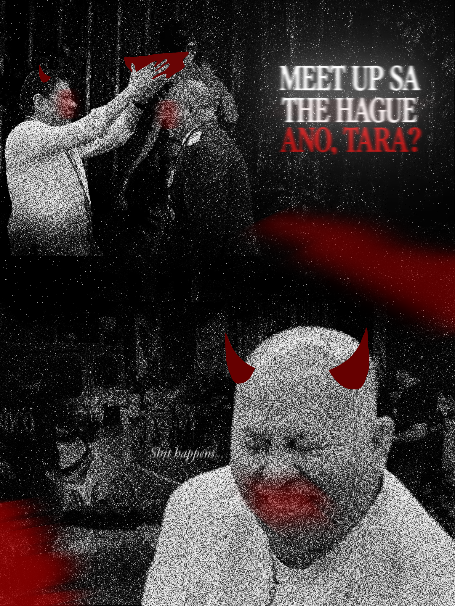

About Me
Hi! I'm Marjorie Ocampo, a third-year Bachelor of Arts in Multimedia Studies student at the University of the Philippines Open University. I'm someone who has always been drawn to creativity and self-expression. Whether it's through graphic design, video editing, writing, or crafting, I love exploring different ways to turn ideas into something meaningful and visually engaging. I am also a member of the UP Journalism Club, and a former member of The Cursor. Outside academics, I'm a big fan of music, films, Korean dramas, and anything that allows me to express my creative side. I also enjoy crocheting, drawing, and experimenting with different art styles. I aspire to become a graphic designer and continue developing my skills in multimedia, visual storytelling, and digital content creation. More than anything, I want to create things that communicate, inspire, and leave an impression. I'm still learning, exploring, and discovering what I'm capable of, and I'm excited to see where my creativity takes me!
Things I Love
Passion Projects
From One Demon to Another (2026)

A political poster I created as a creative expression of my personal grievances, frustrations, and criticisms during a period of heightened issues in the government
BABYMONSTER Are the Psychos (2026)

A fan-made poster created in support of my favorite K-pop girl group, BABYMONSTER. The design embraces a dark, edgy, and bold visual atmosphere that reflects the group's distinct musical style, powerful stage presence, and fierce image.
Choom with BAEMON (2026)

Another fan-made poster dedicated to BABYMONSTER, this time inspired by their music video "CHOOM." The design draws inspiration from the music video's visual direction, incorporating bold imagery, striking compositions, and a dark, edgy aesthetic.
Contact Me
Cellphone Number: 09916081150
Email: mocampo1@up.edu.ph
Facebook: Marjorie Ocampo
Instagram: marjorih_